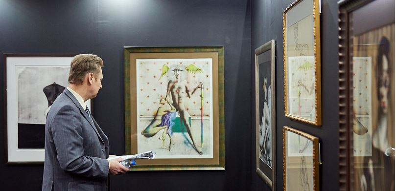
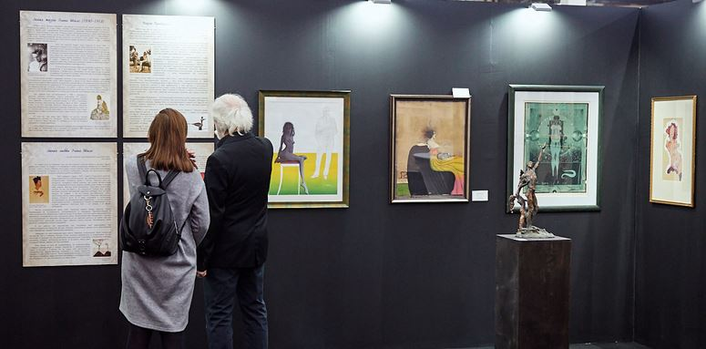

Информация о кружке
Направленность кружка - художественно-эстетическая. Кружок помогает приобщится к искусству, познанию культуры своей и других стран, приобретению практических навыков изобразительного творчества
Расписание занятий
Занятия учебных групп проводятся:
- в первый год обучения - два раза в неделю по 2 часа с 10-минутным перерывом;
- во второй и третий год обучения - два раза в неделю по 2 часа с 10-минутным
перерывом.
Афиша

“Арт-Пермь” 2-11 февраля 2019 Пермская ярмарка

“Тайны Очерского холма” с 1 декабря 2012 Музей пермских древностой
Хотите в кружок?
Заполните свои контактные данные снизу и мы обязательно вам ответим